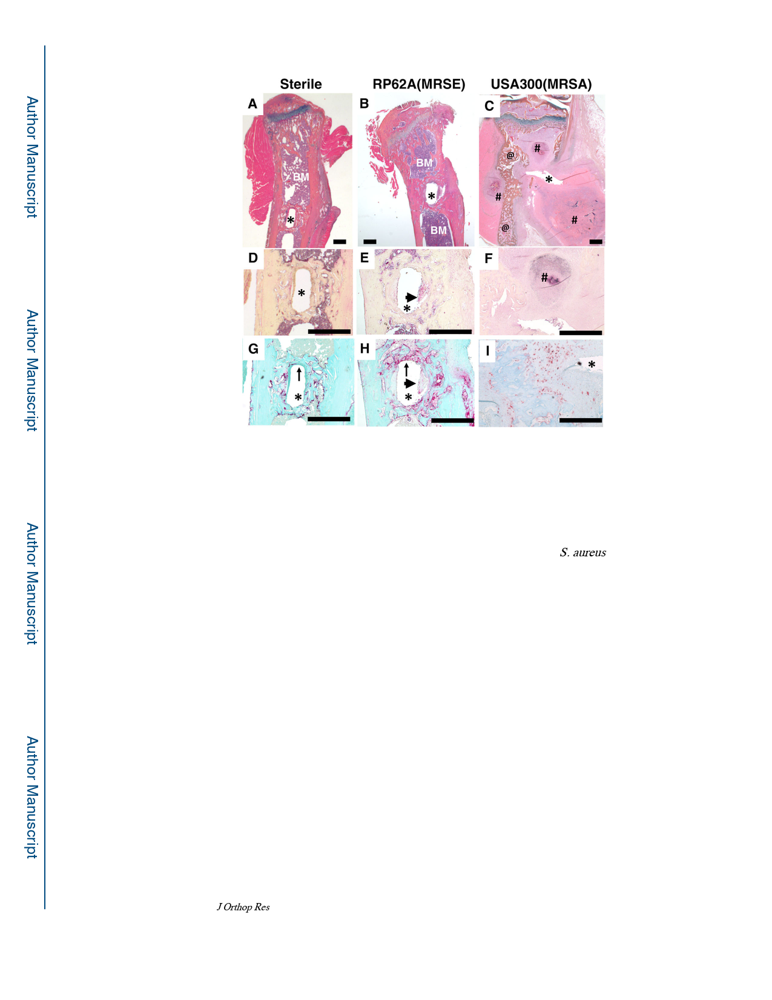

Tomizawa et al.
Page 16
Figure 4. Absence of histopathology in RP62A infected tibiae.
The tibias described in Figure 3 were processed for demineralized histology and
representative micrographs of sections stained with Alcian blue hematoxylin/orange G (A-
C), Brown and Brenn (D-F) and tartrate-resistant acid phosphatase (TRAP) (G-I) are shown
at 25x (A-C) and 50x (D-I) (bar = 0.5mm). The implant insertion site is indicated by the
asterix (*). Note the presence of normal bone marrow (BM) flanking the new bone that
formed around the implant in the RP62A infected tibia, in contrast to the S. aureus infected
tibia in which the marrow has been destroy and replaced by Staphylococcus abscess
communities (#). The massive osteolysis and reactive bone formation (@) observed in
USA300 infected tibiae via micro-CT was confirmed by histology (C). Although no gross
pathology (B) or Gram positive bacteria staining (E) was detected in RP62A infected tibia, a
lack of complete implant osseous integration was apparent from discontinuous bone
formation around the implant (arrows in G vs. H), and fibrous tissue at the host-implant
interface (arrowheads in E & H).
J Orthop Res. Author manuscript; available in PMC 2021 April 01.